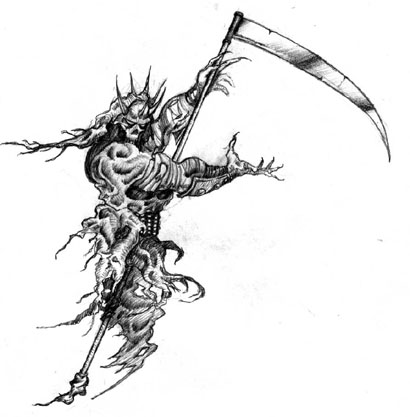

Forums galactiques > Assemblée Galactique : diplomatie officielle > programme de paix
oui | 13 | |
oui mais des modifications sont à faire | 10 | |
non | 27 | |
vote blanc | 9 | |
je dois y réfléchir | 5 | |
Total : 64 vote(s) | ||
Pages : 1 2
| Ren56 Respect diplomatique : 92  08/06 ETU 22:00 | Score : 0 Détails Comment aller vous Galeon ?
| ||
| Galeon Respect diplomatique : 569  08/06 ETU 22:01 | Score : 0 Détails Fort bien! Je vous retourne la question.
| ||
| Ren56 Respect diplomatique : 92 08/06 ETU 22:03 | Score : 0 Détails Tres bien moi aussi . Allez vous venir au Poltergeist ?
| ||
| Galeon Respect diplomatique : 569 08/06 ETU 22:07 | Score : 0 Détails Vous m'en voyez navré, mais je ne peux hélas pas entrer dans une coalition, je suis moi-même dirigeant d'une coalition pour la paix, déolé. mais joignez-vous à moi!
| ||
| Le Clan Yzocras Respect diplomatique : 969  08/06 ETU 23:54 | Score : 3 Détails
Bon les gars, vous ne vous embêter pas trop tout de même. Ce jeune commandant essaye juste d'aider Espérance d'une façon certes naïve mais tout de même intéressante. Certes, mais s'il y a la volonté pour acquérir cette paix, alors elle est bien possible .Ce n'est pas si compliqué qu'on nous le laisse croire. Cette phrase est plus vrai que vous ne le savez. Je pense fortement qu'il y ait des commandants qui veulent nous faire croire que la paix est impossible pour qu'ils puissent continuer à diriger Espérance, pas vrai messieurs Denior et Ragnard entre autres. Nous devons mettre en place un "contrat moral", un contrat encourageant les commandants l'ayant signé de ne plus mentir a Espérance, de ne plus diffamer certains commandants, et divers autres bonnes actions comme cela. Remarquez que j'ai indiqué "encourageant" et non obligeant. Qu'en pense tu commandant? | ||
| kevnz Respect diplomatique : 27  09/06 ETU 07:29 | Score : 0 Détails Cette idée est bonne, mais il ne faut pas que l'incitation soit trop forte car cela pourrait dans certain cas devenir une atteinte à la liberté .Sinon c'est une bonne idée .
Cordialement, Kevnz | ||
| KiaX Respect diplomatique : 178  09/06 ETU 09:12 | Score : 0 Détails Admettons .... et avec ces lois on a quand même le droit de se souler j'espère !
| ||
| M.HILTON Respect diplomatique : 5  09/06 ETU 09:44 | Score : 0 Détails a voté
| ||
| Amberle Respect diplomatique : 59  09/06 ETU 09:50 | Score : 6 Détails - Les lois :
1)Le respect doit régner sur tout Esperance, pour cela nous éviterons un maximum de guerre grace à la diplomatie, ainsi tout litige sera éxaminé par le parlement et réglé en toute paix . 2)Le marché galactique sera réglementé pour éviter toute les arnaques . 3)Esprit solidaire, lorsqu'un(e) Esperancien(ne) aura des difficulté à avancer au sein d'Esperance, tout Esperancien(ne) l'aidant sera récompensé comme il se doit . 4)Chaque Esperancien(ne) utilisant des unités militaires sans motif et autorisation sera impérativement sanctionné . - Le gouvernement : Il sera composé d'un gouverneur et d'un parlement composé de 20 membres éluent au suffrage universel, ce parlement devra s'occuper des litiges entre Esperancien(ne)s . « Je suis d'accord avec trois des quatres points des lois cités précédemment. Cependant, l'article 2 ne me convient pas. Que considérez-vous comme arnaque? Un système ou des unités trop chères, ou bien une vente de planète où les prix seraient si bas que l'acheteur serait considéré comme arnaqueur? Je m'explique, les marchands, en particulier ceux n'étant pas de classe commerciale, donc appartenent à la fédération et à l'alliance sont souvent en gros besoin d'argent, et pour ce ils vendent des planètes ou des unités militaires leur appartenant à très haut prix pour pouvoir survivre. Même si em temps normal ce geste serait considéré comme une arnaque, il s'agit d'une manoeuvre de survie, et les fautifs seront les acheteurs qui se "seront fait avoir". A vrai dire, pour connaitre les tendances actuelles de la valeur d'une planète en leems, il suffit de regarder les autres ventes, et sauter sur la première vente démontre une stupidité de la part de l'acheteur, car celui-ci n'aura pas pris la peine d'examiner les autres prix. Nous ne pouvons donc pas parler d'arnaque, c'est une vente à haut prix où l'acheteur est censé reconnaître les prix élevés de vente. Maintenant concernant le gouvernement, je ne suis pas d'accord pour en instaurer un. A quoi servirait-il? Au cas où vous n'êtes pas censé le savoir, les anarchistes ne respecteront jamais un gouvernement mis en place, sauf si celui-ci les appartiennent. Et les autres commandants n'ont aucun besoin d'un gouvernement qui s'occupera des litiges entre espéranciens. Je tenais juste à vous rappeler que l'entraide entre les espéranciens est formidable, et que quoi qu'il arrive il y aura toujours quelqu'un pour défendre son prochain, donc l'instauration d'une force diplomatique serait inutile, voir même stupide. Du moins c'est là ce en quoi je pense. » | ||
| alien Respect diplomatique : 13  09/06 ETU 10:27 | Score : 0 Détails A voté (oui)
| ||
| Le Clan Yzocras Respect diplomatique : 969 09/06 ETU 10:32 | Score : 0 Détails Effectivement les lois présenté ici par Kevnz ne seront pas exactement les memes que dans le "Contrat Moral".
Je ne veux surtout pas une atteinte a liberté de Parole. S'ils signent ce contrat, ils doivent faire attention a ce qu'ils disent. S'ils ne le font pas ils ne seront pas puni militairement bien sur. Mais seront fortement encoureager a ne plus le faire. | ||
| cdt HALO Respect diplomatique : 10  09/06 ETU 11:28 | Score : 1 Détails Je soutiens l'idée de Amberle sur l'article 2), chaque cdt a le droit de mettre les prix qui veut a son ou ses enchères, ceci s'appelle la liberté des prix.
Et bien sur : a voté. | ||
| kevnz Respect diplomatique : 27 09/06 ETU 11:30 | Score : 1 Détails En ce qui concerne la loi n°2, elle ne serait pas aussi strict que vous le supposez commandant(e) Amberle, les marges seront très larges justement pour que les Esperanciens dans le besoin puissent vendre à des prix plus élevé .
Cordialement, Kevnz | ||
| Général Victa Respect diplomatique : 364  09/06 ETU 11:34  | Score : 2 Détails Pour commencer regardons déjà ce programme.
1)Le respect doit régner sur tout Esperance, pour cela nous éviterons un maximum de guerre grace à la diplomatie, ainsi tout litige sera éxaminé par le parlement et réglé en toute paix . La liberté premiére est de laisser au commandant le choix de choisir ,si il veut régler son affaire diplomatiquement ou militairement 2)Le marché galactique sera réglementé pour éviter toute les arnaques . La liberté du commerce est de pouvoir faire les prix qui veut ,sinon ce n'est plus du commerce. 3)Esprit solidaire, lorsqu'un(e) Esperancien(ne) aura des difficulté à avancer au sein d'Esperance, tout Esperancien(ne) l'aidant sera récompensé comme il se doit . Si on aider tous les nouveaux ,ils n'auraient plus rien à faire.Nous devons les laisser se débrouiller tous seul au départ,sinon cela ne sers à rien. 4)Chaque Esperancien(ne) utilisant des unités militaires sans motif et autorisation sera impérativement sanctionné . Vous vous prenez pour dieu?On doit avoir votre autorisation pour utilisé nos armes maintenant? -Le gouvernement : Il sera composé d'un gouverneur et d'un parlement composé de 20 membres éluent au suffrage universel, ce parlement devra s'occuper des litiges entre Esperancien(ne)s . Vous voulez dire que ces 20 élus feront la police et puis quoi encore . Je veux trouver la paix au sein d'Esperance, pour cela nous avons besoin d'être tous solidaire les uns envers les autres . Car c'est en donnant le respect qu'on l'obtient . C'est cela ,on doit tous être amis entre nous ,vous avez pas prit un peu de vodka vous? Vous connaitrez donc ma réponse,votre programme de paix ainsi fait ,je n'en veux pas car il va à l'encontre de nos libertés . Je prefere voter pour les cronos que voter pour un truc dans ce genre. Point final et même si il passe je n'en tiendrais pas compte. | ||
| M.HILTON Respect diplomatique : 5 09/06 ETU 11:36 | Score : 0 Détails je suis completement d'acord avec le commandant HALO et amberle tous le monde peut choisir ses prix sinon mais ou on va, avoir une reglementation de prix c'est completement inutile se serai vraiment nul il n'y aurait aucune rivalité entre commandant comme on voit en se momment.
| ||
| kevnz Respect diplomatique : 27 09/06 ETU 11:46 | Score : 0 Détails Commandant Hilton, j'ai déjà donné une réponse clair à votre question .
Général Victa, les armes ne sont à utiliser n'importe comment, on voit où en ai Esperance avec toujours la loi du plus fort, c'est anti-démocratique . Cordialement, Kevnz | ||
| Général Victa Respect diplomatique : 364 09/06 ETU 11:52 | Score : 0 Détails Général Victa, les armes ne sont à utiliser n'importe comment, on voit où en ai Esperance avec toujours la loi du plus fort, c'est anti-démocratique .
C'est là que vous trompez commandant. Si vous limitez l'utilisation des armes ,cela n'est pas démocratique. La démocratie dit "pouvoir au peuple,par le peuple et du peuple" Donc la premiére des démocraties et de laisser les commandants libre de leurs mouvements et de leurs facon de faire. Dans votre cas ,la limitation des armes et votre police seraient contre la démocratie. Votre limitation du commerce est aussi anti-démocratie. Comme tous le reste de votre programme est anti-démocratie. | ||
| kevnz Respect diplomatique : 27 09/06 ETU 11:56 | Score : 0 Détails Alors déjà c'est "le pouvoir du peuple, par le peule et pour le peuple" .
Je suis contre la police politique justement, relisez la salle . En ce qui concerne le commerce et les armes j'ai tout dis et si vous êtes si borné que ça veuillez ne plus intervenir sur ces sujets, merci . Cordialement, Kevnz | ||
| morf return Respect diplomatique : 20  09/06 ETU 16:48 | Score : -1 Détails Pour la première fois de m'a nouvelle vie, je vais dire ce que je pense de cette salle.
Inutile Voilà ce que je pense. Je m'explique: Dans cette galaxie dieu seul sais le nombre de fois ou on a voulu installé une paix, et bien sur sa a loupé. A cause de quoi? D'un commandant qui envoyait des HA partout sur les nouveaux commandants, du coup on rentre dans une guerre qui mêle les plus forts des méchants contre les plus forts des gentils. Une fois la guerre fini un jeune commandant crée une salle pour faire la paix et ainsi de suite. Si vous ne me croyez pas, allez fouiller dans l'AG. Mais bon après c'est que mon avis personnel. |
Pages : 1 2
Forums galactiques > Assemblée Galactique : diplomatie officielle > programme de paix